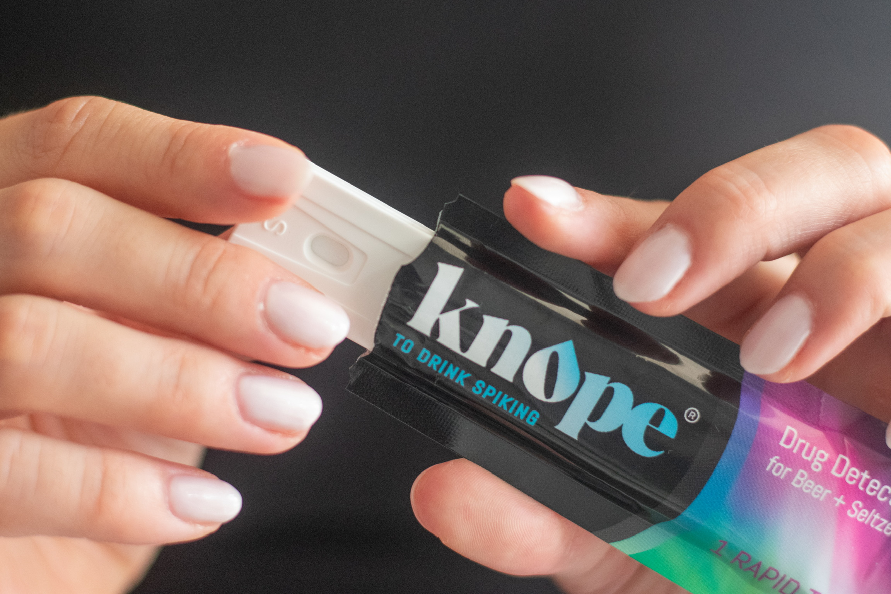
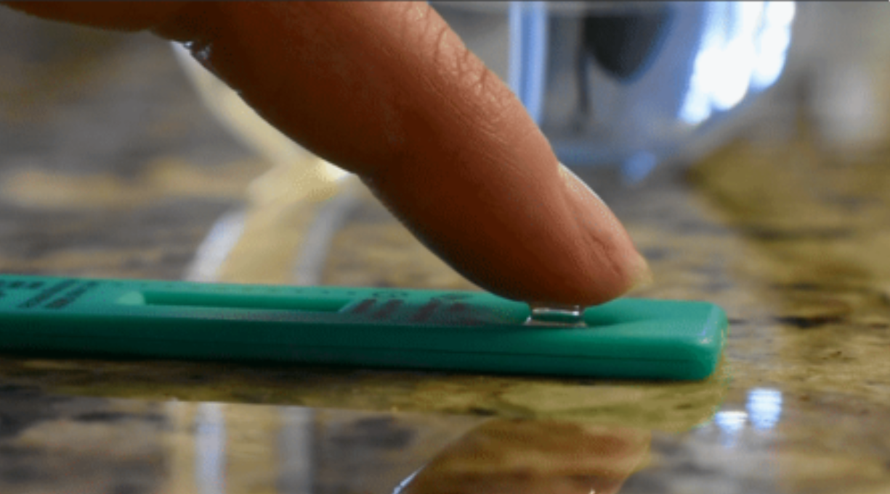
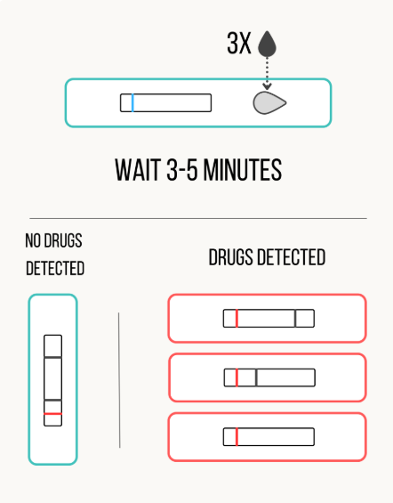

Step-by-Step Instructions
Follow these steps to use the Knope Test
Step 1: Remove Knope Test from packaging.

Step 2: Using your finger or stir-stick, add 3 drops of your beverage to the sample well, marked 'S'.

Step 3: Wait 3–5 minutes and review results.

Ensure the colorimetric Control line has changed from blue to red.
If the Control line has not changed following the 3–5 minute window, repeat Steps 2 and 3.
Home